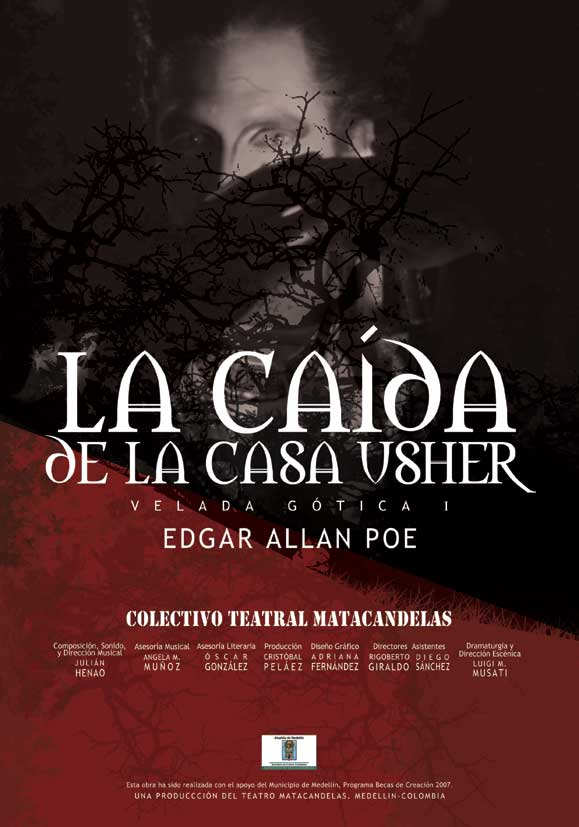
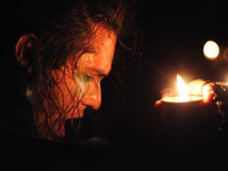
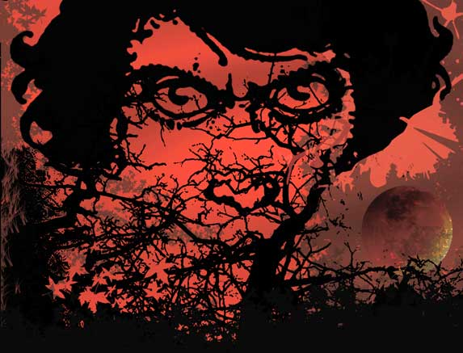

Obra: La caída de la casa Usher.
Grupo: Matacandelas
CARTA ABIERTA A CRISTOBAL PELÁEZ DEL TEATRO MATACANDELAS
Por: Felipe Chavez

Sumo sacerdote de la patafísica teatral surcontinetal:
Con todo respeto y la humildad que me otorga la distancia y todas sus enseñanzas, me autorizo a escribir y enviar estas palabras sin desespero y con afecto a su trabajo, a su persona y al grupo que comanda.
Empiezo por reconocer en el mejor lenguaje farandulero que soy un FAN de Matacandelas, que mi vida personal y mis búsquedas estéticas han tenido como faro al Teatro La Candelaria y al Teatro Matacandelas como una santísima dinidad, a García y a Peláez como dos iluminados sacerdotes y a sus constructos teóricos como dos referentes innegables de la depuración, la técnica, la práctica y especialmente de la poesía del teatro colombiano.
Sin miedo a extenderme en las banalidades de la adulación; quiero contarle que he copiado muchos de sus argumentos sobre el oficio teatral (siempre citando la fuente como lo manda la santa madre ciencia), que lo cito por pura estrategia de citar eminencias incuestionables para hacer mas sólidos mis discursos sobre el teatro y la cultura, que lo he topado en cuanta conferencia, festival o función he podido en diferentes regiones del país; como en esa película mexicana de “El niño y el Papa”, he corrido para alcanzar a entrar en salas, auditorios o pachangas donde usted o uno de los suyos esté presente.
Solo para ilustrar mi grado de admiración, me permito contarle que mi visión sobre el teatro cambió radicalmente desde que ví Los Ciegos, que conocí a Pessoa gracias a O Marineiro y que Pessoa se convirtió en un oasis poético ante la estupidez cotidiana. Que leo y soy capaz de releer los documentos de su página web que como notas pueden parecer desordenadas pero en conjunto demuestra una postura estética con un sólido piso ético con la vida y ese extraño oficio del Teatro que ustedes dignifican día a día.
También por Matacandelas conocí la patafísica y sin eurocentrismo agradezco tener tan cerca algo de dadaísmo, surrealismo, simbolismo o expresionismo para contrarrestar tanto folclorismo de la financiación cultural regional. Que tengo un video de la primera vez que entramos con un grupo de actores a la sede de Matacandelas, como un hecho histórico para nuestro grupo. Ni hablar de su caicedofagia tan saludablemente contagiosa y no crea que es exageración decir que terminé llorando a moco tendido por la fuerza y belleza de La chica que quería ser dios…
Tenía que empezar por esta declaración de amor a Matacandelas para contar mi reciente anécdota en esta búsqueda:
El pasado 8 de agosto de 2009 por casualidad estaba en Bogotá y como un buen “fan”, no me podía perder ese pedacito de la gira Bogotá Simbolista. Me correspondió la última función de la Caída de la casa Usher. Debo aclarar que ando en plan de alfabetización teatral con mi joven esposa quien de teatro conoce básicamente los espectáculos de Disney sobre hielo, pero el Teatro Libre del centro no me ha ayudado pues hace unos meses la invité a ver Los hermanos Karamazov y se quedó dormida.
Esa noche no empezó bien, en la fila me topé con varios de esos jóvenes actores de la TV y el cine actual, un halo de farándula rondaba el solar (¿lunar?) del Teatro Libre atestado de gente. Al tercer llamado un señor explicó que el público no entraría por las puertas habituales. Como usted bien lo ha dicho en público, en ese momento una voz dentro de mí empezó a decirme: “esto no me va a gustar, esto no me va a gustar”, pero agarré con fuerza la mano de mi esposa para escuchar una grabación de un texto extraño, con ese aire impostado de eso que llaman “lecturas dramáticas”.
Yo no se si es que soy muy aristotélico al buscar unidad tiempo-espacio-acción, pero en ese primer texto no encontré pistas sobre estos tres elementos. En el camino hacia fuera de la sala vi el afiche de la temporada que me dejó retumbando la palabra “simbolista”.
Entonces esa voz interna tan cansona me explicaba: “Es una obra simbolista, ahora hay que caminar y es posible que entremos por la puesta de atrás, así los pasos del público serán parte de los símbolos de la obra, es que estos matacandelos son muy locos”.
Y efectivamente empezó la procesión por la acera, pero nadie tuvo la decencia de avisarme que el espacio público está protegido por un ejército de bolardos puestos en fila india justo para golpearme la rodilla derecha. Desde allí el dolor empezó a ser uno de los principales símbolos de la obra.
Cojeando y sin tragarme el madrazo llegamos al Chorro de Quevedo donde una pareja de actores callejeros tenían un círculo de gente dándoles monedas en un sombrero, por un momento los públicos de las dos “obras” se confundieron, pero alguien de logística indicó que la entrada era misteriosamente por la izquierda junto a unas ruinas de una casa de ese barrio viejo de La Candelaria.

“La Caída de la Casa… claro y nos hacen caminar por las ruinas, como para hacer mas fuerte la carga simbólica, es que esos matacandelos son muy simbólicos” me decía la impaciente la voz interior que quería calmar el dolor de mi rodilla.
Creo que bajando esas escaleritas, junto a las velas, sucedió una escena de la que no pude escuchar ni ver nada, porque estaba justo detrás de un grandulón e intentando no golpearme o caer en alguno de los huecos de la ruina.
Lentamente entramos a la sala, en la entrada, a la derecha había un personaje con un violín y otros personajes a los que no me atrevía a catalogar como ángeles. Por primera vez tenía a los personajes de Matacandelas tan cerca y los vi tan humanos que alcanzaba a diferenciar su piel del maquillaje y hasta el color de su pelo, yo que en serio creía que los actores matacandelos eran ángeles.
No alcancé a entrar al escenario, un personaje sentado en las escaleras me indicaba seguir a la silletería tradicional. Justo ahí recordé la obra el álbum del teatro Tecal hace varios años y la extraña sensación de ver unos cuadros congelados en la trasescena, pasar por el escenario para caer en la silla de siempre. Pero efectivamente estaba nuevamente en el teatro Libre a punto de ver a Matacandelas.
Mientras el público terminaba de entrar y extrañamente los personajes fingían de acomodadores, yo hacia un repaso en mis recuerdo para ver qué tanto conocía a Edgar Allan Poe, pero como siempre mi ignorancia me llevó a un pequeño recuerdo de las lecturas adolescentes donde sentí terror cuando alguien abrió la puerta del cuarto donde yo estaba leyendo, creo que esa anécdota me llevó a arriesgar mis primeros cuentos. Pero de Edgar Allan, no recordaba ningún “argumento”, solo algunas sensaciones de oscuridad, soledad y terror.
La función comenzó y la rodilla no me dejaba de doler, juro que intenté entender el texto pero no lo logré, me sentía como en esas películas colombianas que no pueden empatar el liepzing, como que veía algo pero el audio me llegaba tarde, entonces por seguir el texto no me esforzaba para ver en esa penumbra o por enfocar en esa oscuridad no escuchaba bien el texto. No es desconocido que yo difícilmente puedo caminar y mascar chicle simultáneamente, entonces empecé a creer que esto no era una obrita de eso que llaman “teatro comercial”, que esto era “teatro de arte” que le exige al público mas que sentarse a calentar la silla.
Pero los destellos de las velas no “iluminaban” lo suficiente y me preguntaba si la obra perdería algún encanto si usaran alguna lucecita eléctrica convencional, pero mi voz interior me decía: “No seás pendejo, que Matacandelas es muy simbolista, es obvia la relación de la penumbra, de la oscuridad, con el uso deliberado de una iluminación arcaica y tan cargada de sentido como la vela ¿O acaso cómo hacían teatro antes de la luz eléctrica?”.
Creo que en ese debate con mi voz interior me la pasé mas de una hora. Solo recuerdo un ruido como de lluvia hecho con bolsas plásticas, unos cantos de un personaje alado y una especie de baile en círculo con unas velas y recordé la frase de mi esposa: “Calladito te ves mas bonito”, como para decirle a Matacandelas, recordando su propuesta de la inmovilidad “Quietico te ves mas bonito”.

En suma mi queridísimo egregio y patricio Cristóbal Peláez, fui a ver La Caída de la Casa Usher y no entendí y yo se que es mas cómodo posar de intelectual y decir por ejemplo: que la contemporaneidad de la escena teatral colombiana tiene en esta puesta un hilo conductor que sirve de puente entre las vanguardias literarias y una forma de asumir la teatralidad con finos elementos simbolistas que trascienden el texto y se encarnan en la organicidad de la palabra y en la vivencia del espectador quien se imbuye en un lenguaje dramatúrgico que lo conmueve y lo transporta desde la penumbra hasta las luces de las letras de Edgar Allan Poe.
¡Pero no!, no puedo afirmar algo así porque honestamente no entendí, ni disfruté la obra, “ni me entretuve”, con decirte que tengo un dilema moral pues a pesar de mi esfuerzo, la pestañeada me ganó como en tres ocasiones.
Pero me tomo el derecho de enviarte estas palabras, sabiendo que el director del montaje es extranjero, que el grupo tiene derecho a experimentar para seguir creando y que en esos experimentos a veces el paganini es el público, que si no entendí es mi problema por no ser un mejor lector de Poe y del teatro contemporáneo, que difícilmente yo entiendo una metáfora como para entender una patáfora, que seguramente no entendí porque cada día estoy mas cerca del mundo pedagógico que del mundo teatral, es decir que me estoy embruteciendo y justamente por eso seguiré buscando las pistas de Matacandelas en las otras obras de su repertorio, en cuanta charla o pachanga se pueda; al fin y al cabo mi rodilla se repone lentamente y mi ojo de aprendiz teatral también.
Por lo demás, agradezco el privilegio que me otorga al regalarme un ratico para leer estas palabras.
Cordialmente:
Felipe Chávez G.
Fuente: www.felipechavez.tk